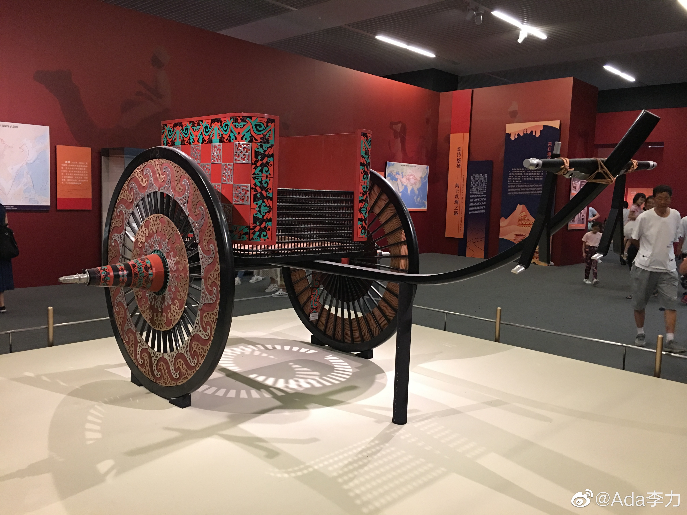

#不知道有什么用的小知识#
在中国历史上，西周曾经花了非常多的科技点在战车上，包括车轴的打磨，木材做成圆轮，还不能散架。当时没有润滑油，也没有橡胶，轮子能够转起来，在当时是绝对的黑科技。可是好不容易西周把战车科技升到顶级了，放眼一看，战车都快被淘汰了，骑兵才是未来。- from 欧成效《如何获得真正的财富》
这个暑假跟姣姣和她同学去看了国家博物馆，看到过战果时期的战车复原件，放在今天让匠人制作，估计难度也挺大，然并卵。
在中国历史上，西周曾经花了非常多的科技点在战车上，包括车轴的打磨，木材做成圆轮，还不能散架。当时没有润滑油，也没有橡胶，轮子能够转起来，在当时是绝对的黑科技。可是好不容易西周把战车科技升到顶级了，放眼一看，战车都快被淘汰了，骑兵才是未来。- from 欧成效《如何获得真正的财富》
这个暑假跟姣姣和她同学去看了国家博物馆，看到过战果时期的战车复原件，放在今天让匠人制作，估计难度也挺大，然并卵。
- 